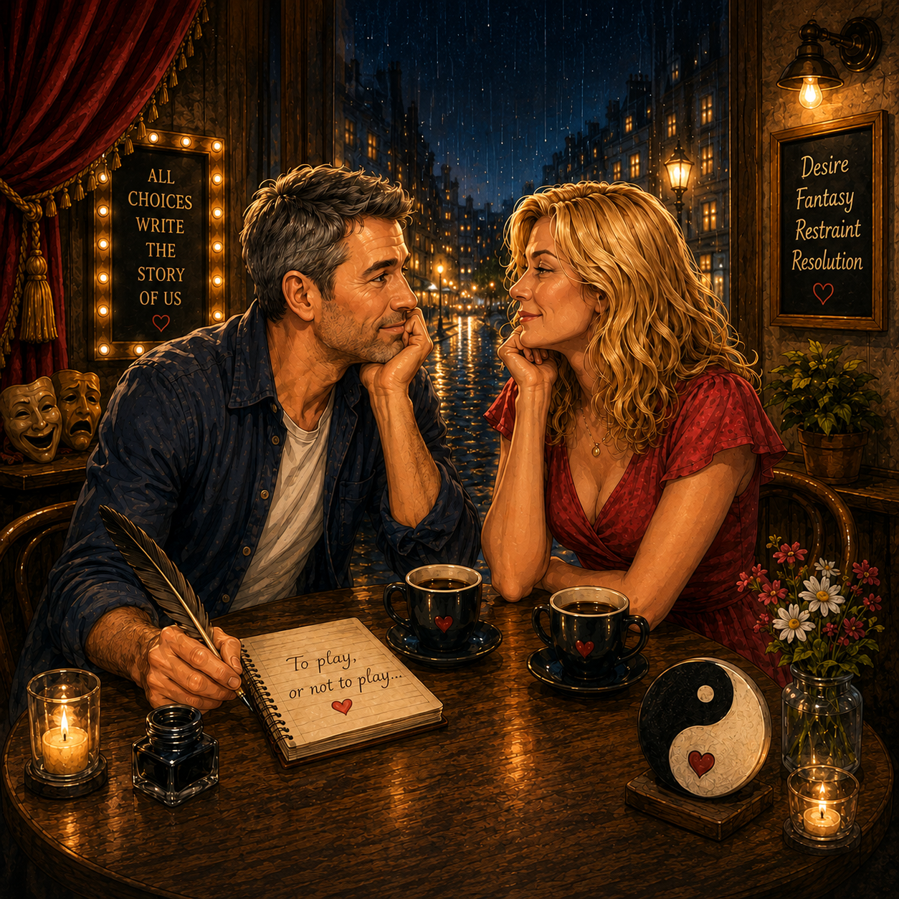

To play, or not to play: that is our destination:
Whether ‘tis more adult to hold our playful needs in mind than to suffer,
The slings and arrows of outrageous fun,
Or to take thee in my arms against a sea of disapproval,
And by opposing them to die or sleep a happy man.
No more; and without that sleep we end,
The heart-ache and the thousand natural blocks.
To share your flesh,
‘tis a communication, Devoutly to be wish’d.
To die, to sleep: To sleep:
perchance to dream of you:
ay even for you to rub my back,
For in that sleep of you in my dreams:
you would come, hard and true!
When I have wrapped our love in silver foil,
And give me cause to cook our love with an eternal flame and,
with spices for your taste and your respect,
And with that joy would make my life so long,
For you to be bare and hold a whip,
to tease my mind with fantasy,
Would you do no wrong and
be consumed by my man’s pride and joy,
The pangs of an unrequited love and natures laws are delayed,
The insolence of this man's youth which spurts hot with a passionate flood,
With patient merit and such a worthy lady!
When he himself might find an easier and
perhaps more lusty mistress,
With a naked body and who would bare all,
To moan and to sweat under my sleazy vice,
But at the thought of taking no more of your breath,
And tossed into a sea of souls,
No body loving is returned and
no longer muzzles on her soft pillowed chest,
And while naked in your fairy eyes and
hope you have no chills for me,
That you’ll not fly to others and let me be,
Thus our adult minds make us hero’s to our commitments,
And thus the natural cry of resolution - Is not to play with you and that’s my last thought,
And traveling in time and space for your enterprise and timely grace,
With all this madness do the tides turn on,
And loose is the name of inaction – withdrawn from me now!
The fair Lady with her hypnotic trance,
Will be remembered and with all my days will I dance for you.